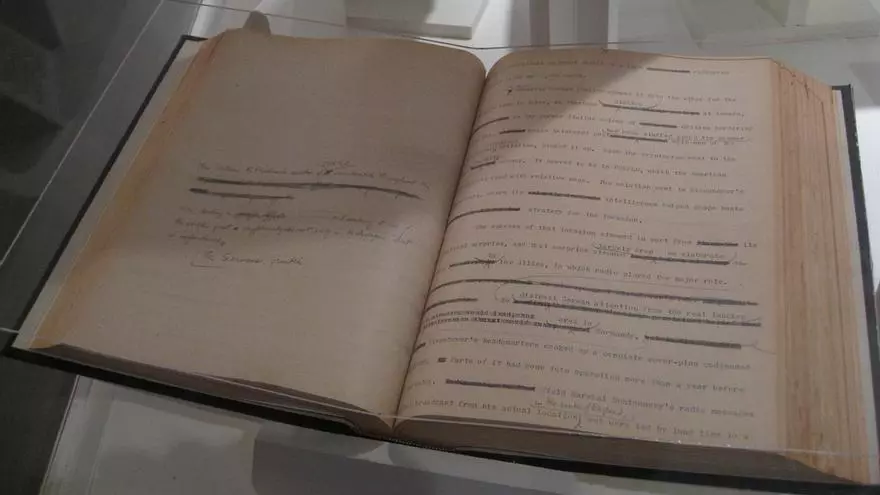
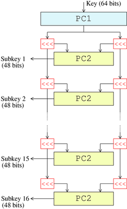

Mavis Batey
Mavis Batey, cuyo nombre de soltera era Mavis Lever, fue una destacada criptógrafa británica conocida por su contribución al esfuerzo de descifrado de los códigos de la máquina Enigma utilizados por la Alemania nazi durante la Segunda Guerra Mundial.
Datos acerca de Mavis Batey:
- Nacimiento y juventud: Mavis Lever nació el 5 de mayo de 1921 en Dulwich, Londres, Reino Unido. Desde joven, demostró habilidades excepcionales en matemáticas y lenguajes, lo que la llevó a desarrollar un interés en la criptografía.
- Trabajo en Bletchley Park: Durante la Segunda Guerra Mundial, Mavis Lever se unió al equipo de descifrado de códigos en Bletchley Park, una instalación británica altamente secreta dedicada a descifrar las comunicaciones encriptadas de las fuerzas del Eje, en particular, los mensajes cifrados por la máquina Enigma. Su destreza en matemáticas y su agudeza mental la hicieron sobresalir en esta tarea crucial.
- Descifrado de mensajes Enigma: Mavis Batey se destacó en el descifrado de mensajes Enigma y, en particular, desempeñó un papel clave en el descifrado de mensajes relacionados con la marina alemana (Kriegsmarine). Sus contribuciones ayudaron a los Aliados a obtener información valiosa sobre los movimientos y planes de la flota alemana, lo que tuvo un impacto significativo en el curso de la guerra.
- Matrimonio y vida posterior: Durante su tiempo en Bletchley Park, Mavis Lever conoció a Keith Batey, otro criptógrafo, con quien se casó en 1942. Después de la guerra, adoptó el apellido Batey y continuó su vida como esposa, madre y una apasionada defensora de la educación y la historia de la criptografía.
- Reconocimientos y legado: A lo largo de su vida, Mavis Batey recibió diversos reconocimientos por su trabajo en Bletchley Park y su contribución a la seguridad nacional. En 2013, poco antes de su fallecimiento el 12 de noviembre de 2013, fue condecorada con la Orden del Imperio Británico (OBE) por sus servicios a la criptografía. Su legado perdura como un ejemplo de excelencia en el campo de la criptografía y su papel fundamental en la derrota de las fuerzas del Eje durante la Segunda Guerra Mundial.
|
Mavis Batey: 
|
Algoritmo de César
El cifrado César es un algoritmo de cifrado simple que se basa en el desplazamiento de letras en el alfabeto. El cifrado toma su nombre de Julio César, quien supuestamente lo usó para comunicarse de manera segura. El cifrado César es un tipo de cifrado de sustitución, donde cada letra en el texto original se reemplaza por una letra que se encuentra un número fijo de posiciones hacia adelante en el alfabeto.
El algoritmo de cifrado César se puede describir con los siguientes pasos:
- Eligir un valor de desplazamiento (clave) que determine cuántas posiciones se moverán las letras en el alfabeto. Por ejemplo, si el valor de desplazamiento es 3, cada letra se moverá tres posiciones hacia adelante en el alfabeto.
- Recorrer cada letra del texto original.
- Para cada letra, aplicar el desplazamiento de acuerdo con la clave. Si la letra es una letra minúscula, se mueve en el alfabeto minúsculo; si es una letra mayúscula, se mueve en el alfabeto mayúsculo. Si se llega al final del alfabeto, se continúa desde el principio.
- Reemplazar la letra original por la letra resultante después del desplazamiento.
- Repetir los pasos 2-4 para todas las letras del texto original.
El proceso de descifrado es similar, pero se aplica un desplazamiento en la dirección opuesta (hacia atrás) para volver al texto original. La clave de descifrado debe ser la misma que se utilizó para cifrar.
|
Aquí hay un ejemplo simple en Python de cómo implementar el cifrado César: 
|
Estándar de Cifrado de Datos (DES)
La historia del Estándar de Cifrado de Datos (DES, por sus siglas en inglés) es una narrativa fascinante
en el mundo de la criptografía. A mediados de la década de 1970, el DES surgió como una solución para la creciente necesidad de seguridad en la transmisión
de datos. Fue desarrollado por IBM bajo la supervisión del Instituto Nacional de Estándares y Tecnología (NIST) y la Agencia de Seguridad Nacional (NSA)
de los Estados Unidos.
El DES se convirtió en el primer estándar oficial de cifrado reconocido y adoptado en 1977 por el NIST (Instituto Nacional de Estándares y Tecnología) como
FIPS PUB 46, lo que lo hizo ampliamente aceptado tanto en el sector gubernamental como en el privado. Este algoritmo se basó en una estructura de red de
Feistel, una innovación que dividió los datos en bloques y aplicó rondas repetitivas de cifrado y descifrado para aumentar la seguridad.
Sin embargo, a medida que avanzaba la tecnología, surgieron preocupaciones sobre la seguridad del DES debido al tamaño de su clave de 56 bits. Con el aumento en la potencia de cálculo
de las computadoras, se volvió evidente que el DES era vulnerable a ataques de fuerza bruta, donde un atacante podría probar todas las posibles claves en un tiempo razonable.
A lo largo de las décadas de 1980 y 1990, varios métodos de ataque, como el criptoanálisis diferencial, revelaron debilidades en el DES y pusieron en peligro
su integridad. A medida que la comunidad de seguridad cibernética tomó conciencia de estas vulnerabilidades, se intensificaron los esfuerzos para reemplazar al DES por un algoritmo más robusto.
|
Data Encryption Standard: 

|